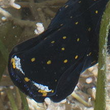
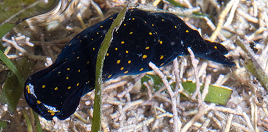
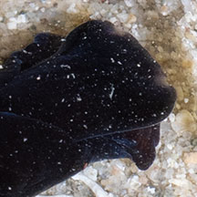

|
|
| slugs text index | photo index |
| Phylum Mollusca > Class Gastropoda > sea slugs > Order Cephalaspidea > Family Aglajidae |
| Black
tailed-slug Chelidonura sp.* Family Aglajidae updated May 2020 Where seen? This small black slug is sometimes seen on some of our shores, burrowing among seagrasses and near living reefs. Features: 1-2cm. A long, cylindrical body that appears to be made up of two parts. A pair of 'tails', one a lot longer and narrower than the other. It has a tiny internal shell. Included here are slugs that are all black and those that are black with speckles and other touches of colour. |
 Cyrene Reef, Feb 12 |
 Cyrene Reef, Feb 12 |
 Cyrene Reef, Feb 12 |
 |
 |
*Species are difficult to positively identify without close examination.
On this website, they are grouped by external features for convenience of display.
| Black tailed-slugs on Singapore shores |
On wildsingapore
flickr
|
| Other sightings on Singapore shores |